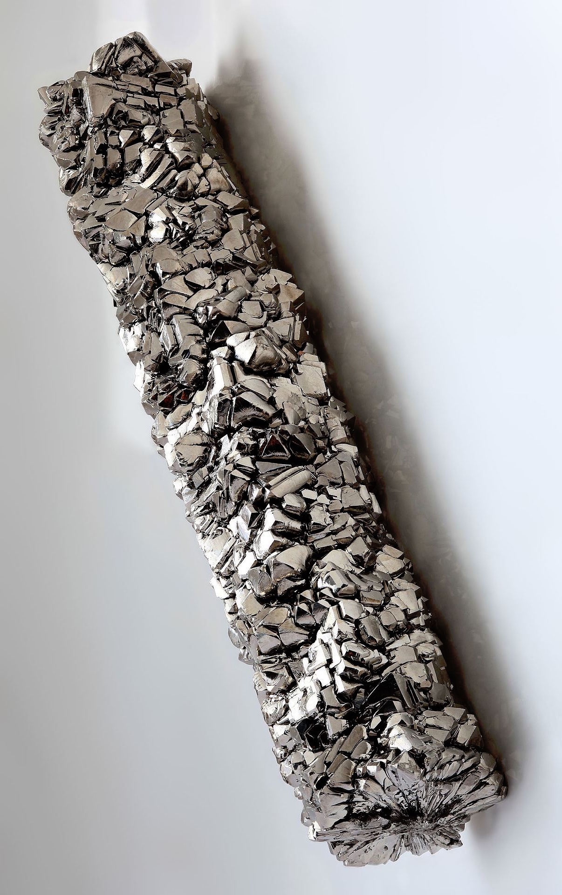
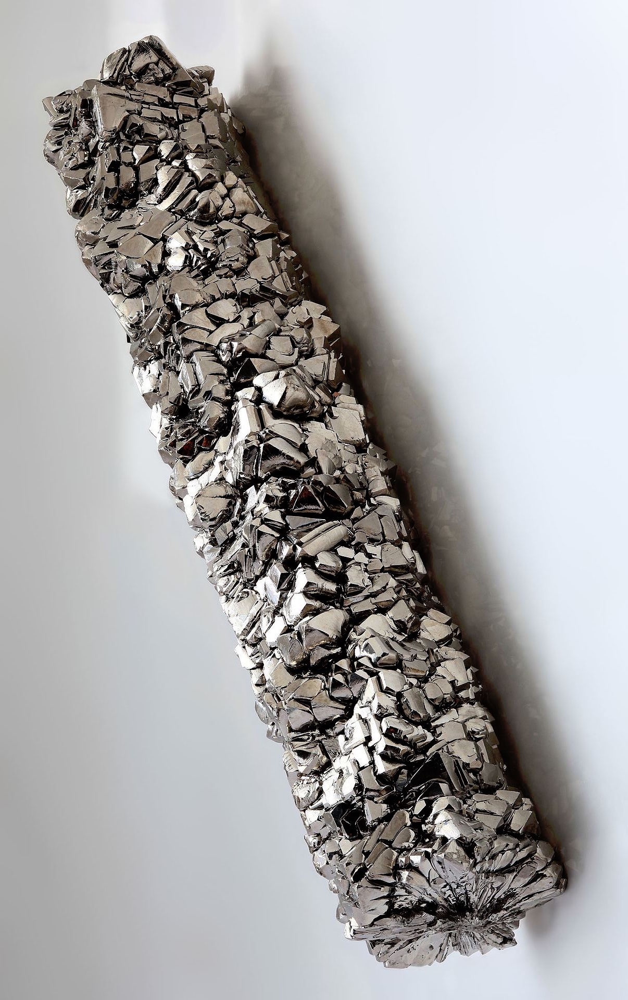
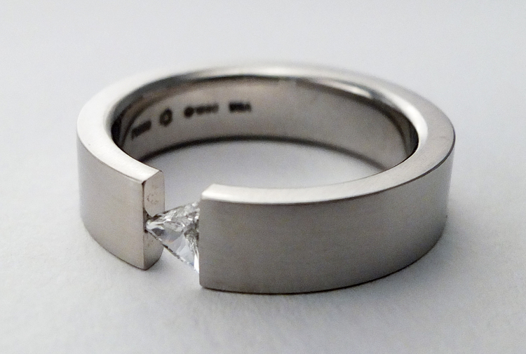
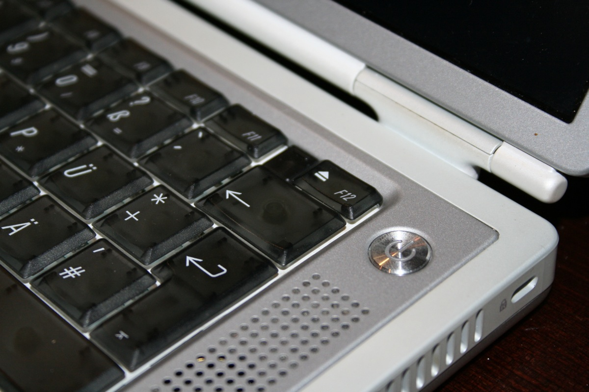
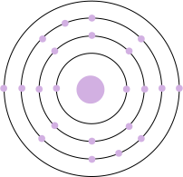

Name: Titanium
Formula: Ti
Atomic Number: 22
Group: 4
Block: d
Period: 4
Relative Atomic Mass: 47.867
Discovery Date: 1791
Appearance: A hard, shiny and strong metal.
Uses: Jewellery, alloys used in aircraft and spacecraft, surgical applications, golf clubs, laptops, submarines.
 Atomic Structure:
